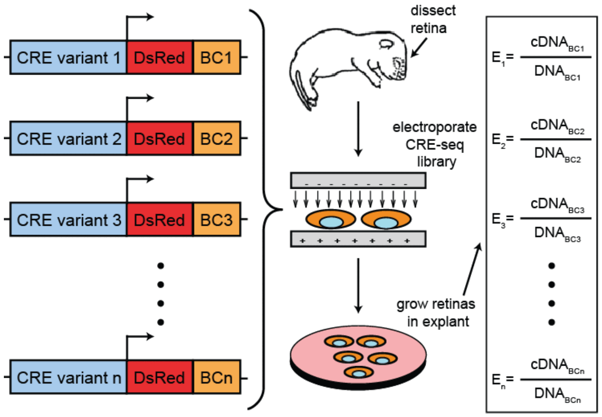

PMID: 23129659
CRE here means “Cis-regulatory elements”, not to be confused with Cre recombinase, which is unrelated. Another use of multiplex characterization is for promoters. In this variation, a library of promoter elements is placed upstream of an RFP gene and a barcode. The barcode is unique to each promoter variant and will be incorporated into the mRNA if the gene is expressed. The library of DNAs is introduced into retinal cells by electroporation, and then the mRNA was extracted. If the promoter expressed during the experiment, then mRNAs will be present containing its barcode within this mixed mRNA sample. After reverse transcription and PCR, the pool is sequenced, and the frequency of each barcode is calculated. By normalizing against the frequency of each barcode in a deep sequence sample generated from the DNA present in the original sample, the relative expression of each gene can be quantified. In this manner, the effect of different mutations of a promoter can be mapped out in one experiment. Notice that nothing here is new machinery. It is the barcoding we drew back in the tools section, read out by the RNA-seq we did right after it, with one extra step: you sequence the input DNA as well so you can divide by it. That division is the whole measurement, because a barcode can be abundant in the mRNA either because its promoter is strong or because there was simply more of that construct in the pool to begin with. CRE-Seq: a library of cis-regulatory element variants, each upstream of DsRed and its own barcode, electroporated into retina; the barcode's abundance in the mRNA over its abundance in the input DNA gives each variant's expression.